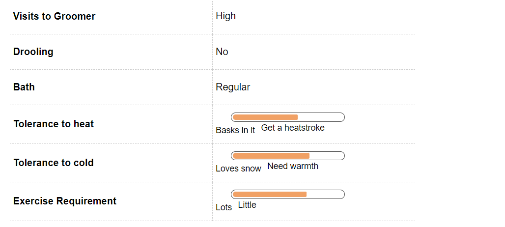
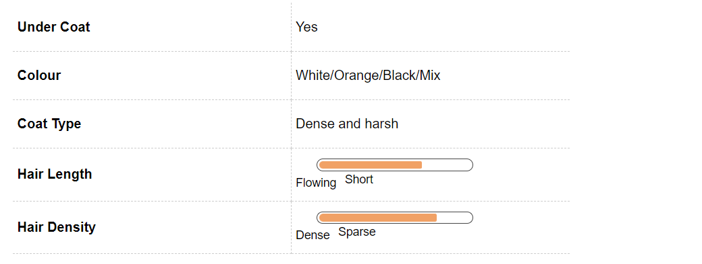
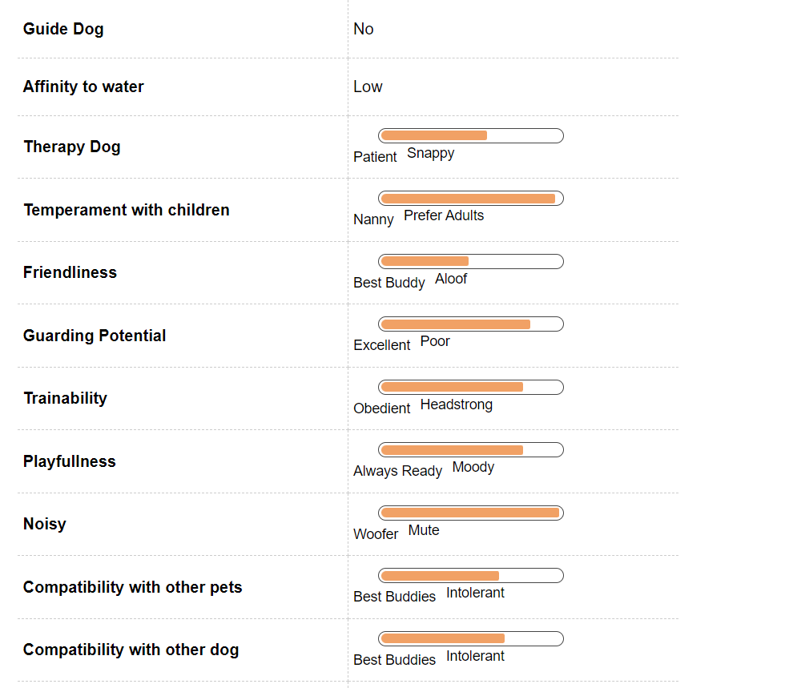
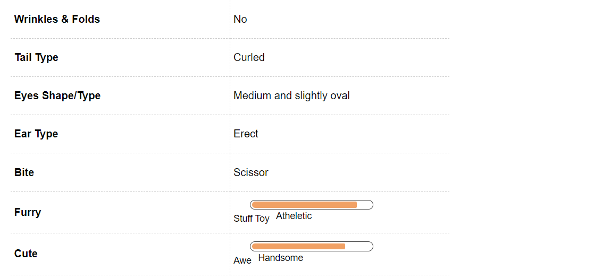

German Spitz Dog Breed Information
Introduction
It is very easy to confuse this breed for a Pomeranian. In fact there are many people who will still think that any white and small dog is a Pomeranian. This is a wrong notion though, not all white, small and furry dogs are Poms. Most of the dogs that you see around you are Spitzes. There are many varieties of Spitz as well but in this write up we will discuss the German Spitz.
German Spitzes are easy to train, a little persistence will ensure basic training. This is an alert and loyal dog that makes them easy to train. Training may be easy but remember that grooming your pet will be a time consuming effort, you have to ensure that the coat is brushed regularly to keep it tangle free all times.
If you have a German Spitz or want to be a proud owner of this breed then this write up will help you. After all keeping a pet is not a decision that you can make in a hurry, this breed will be your faithful companions for at least 12 to 14 years.
History
The best way to know about the lineage of your pet is to start from the beginning. This breed has been present in Germany for a long time but it was not until the 1970s that this breed was introduced to the outside world. Scandinavia and Great Britain were the first countries to recognize this breed. After this the German Spitzes spread rapidly across the world soon.
The German Spitz, it is believed, is the direct descendent of various Nordic herding dogs such as the Samoyed and the Lapphund. They came to Europe with the Vikings. In fact there is German literature that refers to Spitz somewhere around 1450 as well. It is hard to believe that the robust house pet was once as a farm worker.
Unique Aspects
Your German Spitz has a dominating temperament though docile. They can quickly become the leader or the boss of the house. You will be surprised to see that this breed is small in size but because of its temperament can at times act as the leader of the larger breed in your home as well.
The Spitz is one of the perfect breeds to be kept in an apartment; they are pretty active indoors and will prosper well even without a yard. This is an active breed and will love the regular outings and exercise so if you want company for your walks then this may just be the perfect breed for you.
German Spitz is the perfect pet to be kept in an apartment but the one thing that has to be remembered at all times is that they can bark nonstop at times so it is integral to tell your puppy or dog to stop when required. They can bark obsessively, which can be a problem not only to you but can create nuisance for your neighbors as well. So, early training is very important for this breed. They are cheerful, bold and affectionate towards their master and will be easy to train.
Fun Trivia

Spitzes are great family pets, who thrive on human companionship and are an easy breed to train. After this it is surprising to know that they have not been a part of many movies and is yet to catch the attention of the tinsel town. We are always on the lookout of information and will add more to the list as soon as find any.
Here is a small list of movies and celebrities that you share your pet with among many.
Movie Character
One of the cult Bollywood movies ‘Hum Aapke Hain Kaun’, featured a Spitz by the name of Tuffy.
Celebrity German Spitz owners
As stated above Tuffy was later adopted by Madhuri Dixit and lived up to the ripe age of 12. In addition to this Bollywood star, American actress and dancer Jenna Dewan Tatum has a Spitz called Meeka.
Vital Stats:
Dog Breed Group:
Utility Dogs
Height:
15-23 Inches
Weight:
7-18 Kg
Life Span:
13 to 14 years
Pros and Cons
| Pros |
Cons |
|
Perfect for apartment and condominium living |
Grooming is easy but will require time |
|
Excellent pets for the family, especially children |
Can bark obsessively at times
|
|
Easy to train because of good intelligence level |
|
German Spitz Maintenance & Effort

Grooming
The German Spitz comes in a variety of colors though the common colors include white, orange and black but do not be worried about maintaining it. When it comes to long-hair dogs this is rather a low maintenance breed. It has a silky texture, which does not trap mud or dirt easily. So, regular brushing on the coat will ensure that it remains tangle free and does not have any dirt trapped in it.
You will need to brush them at least three times a week to ensure that the coat is in its optimal health at all times but if he or she does not like to get dirty then this can be done once a week as well. These Spitzes shed heavily twice a year, though you will see hair lying everywhere in the house. So the best way is to brush the hair regularly so you can get rid of the dead fur from your pet’s coat. In addition to this you will need to follow the regular grooming regime with your pet, that is, brushing the teeth of your German Spitz. This should be done at least on a weekly basis as this will help to remove all tartar buildup and ensure fresh breath at all times.
This will also prevent various gum diseases in your pet. The toe nails will also require to be trimmed on a regular basis so as to prevent any problems further. Dog nails have veins in them and if it gets chipped then it can be very painful for your pet. You should always start this grooming regime in your pet from an early age as this will ensure that he is not temperamental with someone touching his feet, mouth or ear at a later stage.
German Spitz Hair & Coat

German Spitz Health & Care
Common Health Issues
German Spitzes are generally a healthy breed but you have to remember when getting a puppy home that almost all and every breed has a chance of developing genetic disorders and they can also contract any of the common diseases. This not a word of law; these are just some of the unfortunate cases that you can encounter with your Spitz at times.
One of the most common issues that you can face with your German Spitz is Luxating Patella, this can rise from obesity as well. This is a common problem in small dogs. In this condition the kneecap is dislocated, which is inside and outside the leg and can move in both directions. This can be treated through medicines and may require surgery in severe cases.
One of the most common issues that you can face with your German Spitz is Luxating Patella, this can rise from obesity as well. This is a common problem in small dogs. In this condition the kneecap is dislocated, which is inside and outside the leg and can move in both directions. This can be treated through medicines and may require surgery in severe cases.
German Spitz Behavior

Temperament
The German Spitz is the perfect family dog, they love to be in the company of their human counterparts and will thrive when around people. Their even temperament makes them the perfect pets for the family. This is an intelligent breed and is easy to train. One of the prime reasons is their want to please their owners.
They are a courageous lot and at times can suffer from the Small Dog Syndrome, which is when the dog feels that they are bigger than other dog and feels that they can challenge everyone around them. They are not friendly with strangers so socialization is very important with this pet.
German Spitzes enjoy and love to participate in various agility training such as chasing the ball. They are great with children and generally do not snap, though you have to remember one thing that the young children in the household have to be taught to behave around a dog as they might accidentally irritate or hurt him or her.
Environment
Your German Spitz is a very adaptable breed and will be happy in an apartment as well as a house with a yard. The size of the breed makes them adaptable in different living environments. It loves to stay in a family and will not fare well when left in a yard alone. You always have to remember that your Spitz thrives on human companionship and that may be the best way to ensure the growth of a well rounded dog. Though the size is perfect for younger children, they can be better companions to elderly family members also. If you have young children in the family then you will have to train them to be around dogs.
Spitzes are a very energetic breed but they will love to go out for a regular exercise or a run as well. They are pretty active indoors as well, so he or she will fare well in such small areas as well. They enjoy their activities inside their house and are also happy with their long walks. This breed does well with other pets as well. They are alert and loyal and are good learners so you can train your little pooch to be the perfect pet with regular training. German Spitz will make a good watchdog as well, they will bark and inform you of any intruders coming to the house.
Training & Intelligence
German Spitzs are a very playful breed that is alert and intelligent. They are obedient and love to please their owners or family. This makes the training process a little easy. The owner just has to be consistent and make good training programs and in a few months you can have the perfect trained dog in your house.
Your Spitz can bark constantly at all times, so you will have to train her from an early age to not bark, this can be easily achieved by regular training. If you do not train them from the beginning on the same then be ready to face regular complaints from your neighbors. The high intelligence level of the Spitz helps them to excel in various obedience training programs. They are very quick learners and want to participate in various games.
The only roadblock to training your German Spitz puppy is that it can be stubborn at times but you would have to start the training early. Proper training will help you to inculcate good habits in your dog. It is not difficult to house train your Spitz puppy as well, you just have to remember to start early and crate training should be encouraged. You have to keep in mind that a crate should be a safe place for your pet and he or she should never see it as punishment.
German Spitz Breeding
Procreation
German Spitzes are generally a healthy breed and even their breeding does not have many complications attached. The only thing you have to think about is giving the adorable puppies up for sale or adoption. An average male and female Spitz attains sexual maturity anywhere between six to nine months of age. Though your pet is still very young to breed.
A dog takes around 18 months to reach his or her full height and structure. It is advisable to breed your dogs after at least two years of age. If you are a first timer at breeding then taking a vet's help is advisable. You just sit back and enjoy the company of three adorable little puppies, an average litter size of the breed.
Puppies
Your German Spitz puppies are like living toys, they are docile and love the company of humans. They come in various colors that makes them look more like a stuffed toy. These puppies do great with humans; in fact, they thrive in their company. If you cannot give time to your pet then this might not be the ideal breed for you.
Spitzes are the perfect family pets, they love to be around children and do well with other pets as well. Remember one thing at all times that young children may accidentally harm the small puppies because of their size. So, it is very important to teach them to handle pets. Your puppy will shed a lot till he is at least six months old as he will lose all the puppy hair and grow its adult hair. Just remember that they will need regular grooming to prevent any matting and tangles. This will ensure a lustrous coat at all times.
German Spitz Appearance

Body
The most unique thing about your German Spitz is that it is always white so there's no chance of getting multiple colors in the same litter. They have a firm and strong body with a pointed muzzle that is proportional to the head. The head is medium sized and looks wedge shaped when you look from above.
The skull is moderately broad and is slightly round. The tail is of moderate length and is set high and is carried curved over the back. The ears stand erect and the tail is carried over the back. The nose is black and round and the lips are black and tight. The eyes are oval shaped and dark, which is obliquely set and is not too wide apart. The jaws are strong with a regular and complete scissor bite. The shoulders are moderately sloping along with straight forelegs.The hind legs are well proportioned and balanced. They are muscular and moderately angulated. The feet are small and cat like, which is well cushioned along with black pads and dark nails.